Valley: ръководство
Как работи долината, какво прави всеки бутон и защо стават нещата. Използвай съдържанието вляво или търсачката горе.
Нищо в ръководството не отговаря на това търсене.
Какво е Долината
Ти си цар без земя и стоиш на Трите хълма, където един ден ще бъде Пловдив. Това е неолитът, времето преди метала. По храстите има плодове, през равнината тече река, има дъбови гори, борове по височините, тръстика край водата и камъни наоколо. Никой не знае как да прави нещо повече от онова, което ръцете му могат да съберат.
Долината няма дърво на технологиите, няма точки и няма епохи, които да се достигнат. Нищо не се отключва, защото е изтекло време или защото си платил. Едно правило движи всичко:
Нуждите водят до идеи. Идеите водят до решения под формата на предмети и умения.
Така културата, до която стигаш, е следствие от земята и от онова, от което хората ѝ са имали нужда, а не набор, който избираш от меню. Къщите, сечивата, оръжията, облеклото и вярванията им израстват от онова, което е било около тях, и от онова, което е трябвало да решат.
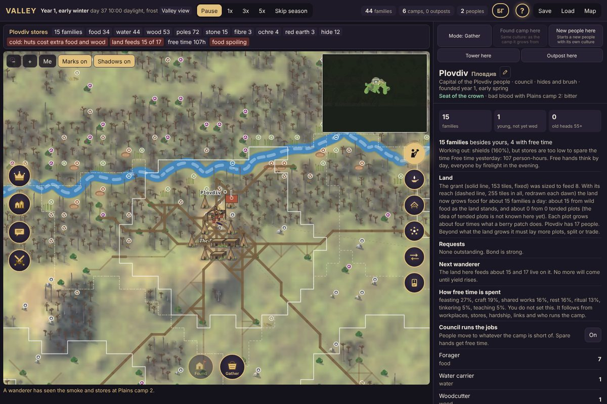
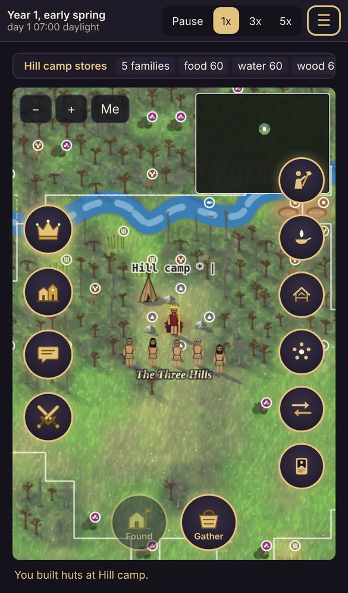
Ново във версии 148 до 161
Какво се промени от последното ръководство, накратко. Всяка част е описана по-подробно по-долу.
| Област | Какво е ново |
|---|---|
| Какво виждаш | Само онова, което собствените ти хора са видели. Лагерите, пътищата и връзките за снабдяване на други царства се появяват едва след като твоите разузнавачи, кули или пътници са ги видели. Панелите за царството и областта показват само твоите лагери. |
| Ресурсите свършват | Рудата, солта, златото и варовикът са находища, а не безкрайни. Изчерпано повърхностно петно може да се копае отново като изкоп, после като галерия, щом хората имат тези идеи. Камъкът и глината остават възобновими. На картата има злато; картите за много играчи имат повече от всичко. |
| По-добри ниви | Нивите се изкачват по стълба: обработван участък, после оране, угар, тор и напояване. Всяка стъпка дава повече и се вижда върху нивата в 3D (бразди, ивица угар, купчини тор, канавки). |
| Видими постижения | Всяко постижение, което има форма, я получава на картата и в 3D: трънливи плетове и палисади като пръстени около лагера, нощни кошари, наблюдателници, кучета, варници, съхнещи кожи, дъски, копия, мрежи, изкопи и галерии на мините, шатрата и складът на интенданта. |
| Пътеки и пътища | Отъпканите пътеки са еднакви на картата и в 3D. Пътниците се придържат към пътеката, щом е отъпкана, така че се образуват няколко силни пътеки вместо плетеница. Цената на пътя следва наклона, почвата и покривката; отъпкана пътека или път е много по-бърз. |
| Идеи | Лагерът работи по няколко идеи наведнъж, с една в центъра на вниманието. Ако сложиш мислители на идея, тя става център за цялото село. Около една четвърт от вечерното свободно време вече отива за идеи, така че идеите се довършват, вместо да скачат. |
| Хора | Всеки човек може да бъде пратен на труд, на идеи, в набора или оставен свободен. Няма скрити семейни числа. |
| Армията | Наборите се наемат към крепост. Интендант ги храни от лагерите около крепостта, на кредит от короната, докато няма жетони. Данъкът вече съществува само за да плаща храната на войниците. Виж Набори, войници и крепости. |
| Сборно поле | Ново във версия 161: събери набора на лагерите наоколо в една войска и тръгни срещу съсед, без крепост. Виж Набори, войници и крепости. |
| Крепости | Крепостите изискват Палисади, които израстват от Трънливи плетове и нощни кошари (версия 160). Зверове, които още минават плета, набор, чуждо царство наблизо или нападатели тласкат лагера към тях. После строиш крепостта сам от раздела „Строеж“ на лагера. |
| Време и темп | Дъждът в 3D следва сезона (влажни зими и пролети, сухо късно лято). Играта върви много по-бързо на големи карти; на компютър година минава за много по-малко от минута при 5x. |
Целта
Изпълни Пловдивската долина с народа си и я обедини под короната.
Постигаш го, като основаваш лагери и оставяш народите с право да основават да създават свои; като пазиш лагерите да не се отцепят или ги каниш обратно; като печелиш чужденците с търговия, дарове и благоразположение; и, когато се стигне дотам, като превземаш лагерите им. Няма точки. Панелът на царя показва докъде си стигнал: колко от сушата покриват наделите на царството, колко лагера се подчиняват на короната и колко известни лагера стоят извън него.
Как може да завърши едно царуване, от най-пълния успех до най-лошото:
| Край | Кога |
|---|---|
| Един народ изпълва долината | Не е останала свободна земя, която да изхрани лагер, и всеки лагер е от твоя народ: първото селище, дъщерните му и клоновете, които се отцепиха и се върнаха. |
| Много народи, една корона | Не е останала свободна земя и всеки лагер се подчинява на короната, макар и не всички да са от един народ. |
| Царят слага короната | Оттегляш се или слагаш край на царуването от крайния екран. |
| Нито един лагер не се подчинява на короната | Всеки лагер на царството е изгубен, превзет, отцепен или изоставен. |
Пълна долина, разделена между царства, не е край: това е застой, който завършва с война или със съюз. Виж Победа и поражение и Глад за земя.
Правилата на света
Тези правила важат навсякъде в играта и обясняват повечето от онова, което ще видиш.
| Правило | Какво значи в играта |
|---|---|
| Без измами | Всичко се решава от онова, което съществува в момента: хората, запасите, земята, времето. Нищо не се появява от нищото. Дори даровете на короната идват от истински запаси или истински жетони. |
| Знанието се вижда, не се дава | Узнаваш за чужденците само когато някой ги види. Името на водача на нападателите се научава от падналите след бой. |
| Съветите решават | Щом лагерът има съвет, той сам ръководи работата, строежа и снабдяването си. Ти определяш правила и можеш да отменяш някои неща, но лагерът действа според своите нужди. |
| Свободното време ражда идеи | Хората без работа денем и всички вечер на светлината на огъня мислят. Без свободно време няма идеи. |
| Разстоянието има значение | Натоварените хора вървят наполовина по-бавно. Далечните лагери усещат короната по-малко, а помощта пристига с време. |
| Широки реки | Повечето хора се нуждаят от сал или лодка, за да прекосят най-широките реки. Царят и изследователите могат да ги преплуват и прегазят, но всяко прекосяване отнема цял ден. |
| Записите се пазят | Новите възможности се добавят като допълнителни данни, така че по-старите записи още се зареждат. |
Семейства, а не отделни хора
Всяка фигура по картата е семейство. Работещият мъж в него е онзи, който събира, строи, мисли, отзовава се на набора и се бие; жена му, децата и старите не се показват. Семейството яде и заема място като едно цяло. Навсякъде се броят семейства: съвет се създава при 6, лагер може да основава нови лагери при 12. Само картата на културата дава брой на хората, като приблизителна оценка (около N души).
- Младите се броят отделно, докато навършат 15 години, после създават свое семейство.
- Когато главата на семейството умре, пораснал син (на 10 или повече години) поема и семейството продължава. Без пораснал син семейството свършва: вдовицата и децата се присъединяват към роднините си.
- Една иконка на колиба е група (колиби за 3 семейства; здрави къщи за 4), за да не се изпълни картата с покриви.
Време: годината има четири сезона по 12 дни, общо 48 дни. Вечерта и нощта минават за около секунда зад затъмняване („Нощта минава“). Всичко в тях пак се случва: работа на светлината на огъня, идеи, обучение, ядене. Заповедите, дадени късно през деня, се изпълняват призори.
Екранът
Картата заема средата. Всичко останало се отваря и затваря от кръглите златни иконки по краищата ѝ. Докосни иконка, за да отвориш панела ѝ; докосни я отново, за да го затвориш. На компютър панелите се отварят до картата, по един от всяка страна; на телефон се плъзгат нагоре върху нея (виж На телефон).
| Къде | Бутон | Какво прави |
|---|---|---|
| Горна лента | Пауза, 1x, 3x, 5x | Скорост на играта. 5x е за моментите, когато нещата вървят сами. |
| Горна лента | Прескочи сезона | Затъмнява, превърта до следващия сезон или до следващото важно събитие (битка, бедствие, създаване на народ, война, край) и се връща. |
| Горна лента | Продължи | Продължава играта, записана автоматично в този браузър, на картата, на която е играна. |
| Горна лента | Запази / Зареди | Изтегля играта като файл или зарежда такъв. |
| Горна лента | Карта | Избира картата за игра (виж Карти). |
| Горна лента | БГ / EN | Превключва между английски и български. Изборът важи и за това ръководство. |
| Горна лента | ? | Отваря това ръководство в нов раздел. |
| Долу на картата | Засели се / Основи (колиба и знаме) | Заселваш първия си лагер там, където стои царят; после основаваш нов лагер на народа си. Сиво е, когато земята там не може да изхрани лагер. Същото като Засели се тук / Основи лагер тук в панела на лагера. |
| Долу на картата | Проучване (око) / Събиране (кошница) | Проучване: докосването само води царя. Събиране: докосване на ресурс го кара да го добива и да носи товара у дома. Докосни иконката, за да превключиш. |
| Ъгълът на картата | −, +, Топо, Аз | Отдалечаване, приближаване, топографски изглед и центриране върху царя. |
| Ъгълът на картата (компютър) | Знаци, Сенки | Включва и изключва знаците за ресурси и сенките (виж Знаци и сенки на картата). На телефон са в менюто ☰. |
| Ъгълът на картата (отдалечено) | Народи / Вярност / Без цветове | Оцветява земята при отдалечаване, когато семействата се показват като бройки. Народи: златно за твоя народ, синьо-зелено за други народи, верни на царството, червеникавокафяво за лагери извън царството, както са били при последното им виждане. Вярност: лагерите на царството от зелено (предан) до червено (непокорен). Без цветове: без оцветяване. Оцветява се само земята, която си открил, а външните лагери се появяват едва когато някой от царството ги види; виждаш ги такива, каквито са били тогава. |
| Картата | Плътни и пунктирни линии | Плътната линия е дадената на лагера земя (наделът), която е постоянна. Пунктирната е докъдето стига, за да работи, и тя расте. |
| Картата | Семейства или бройки | Отблизо се рисува всяко семейство. По-отдалеч всеки лагер показва бройка, а земята се оцветява. |
| Лента на запасите | Червени числа | Този запас не стига. |
На телефон
На телефон играта изпълва екрана и страницата никога не се превърта. Картата заема мястото; панелите идват при теб.
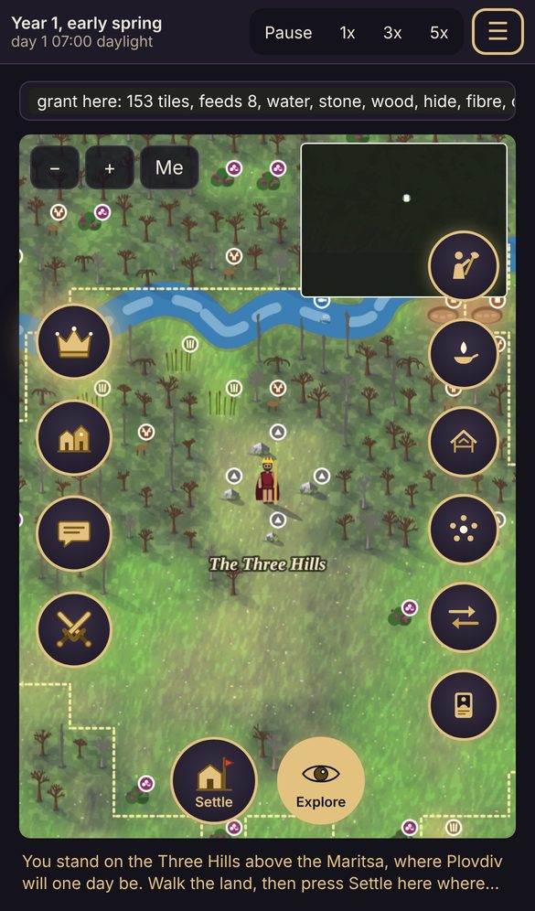
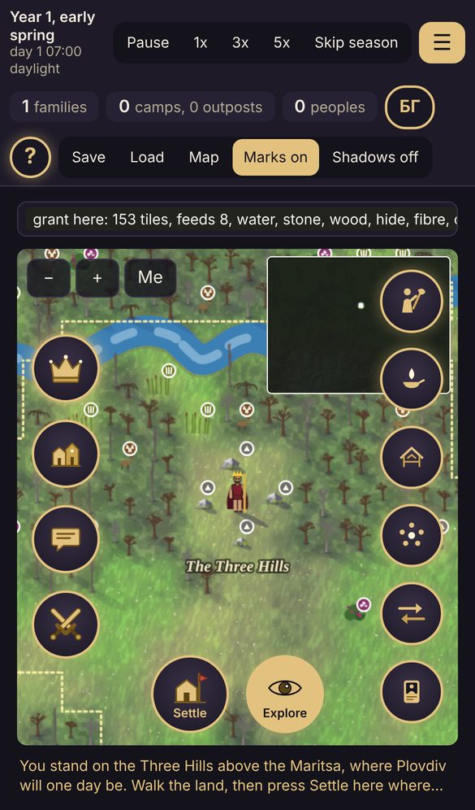
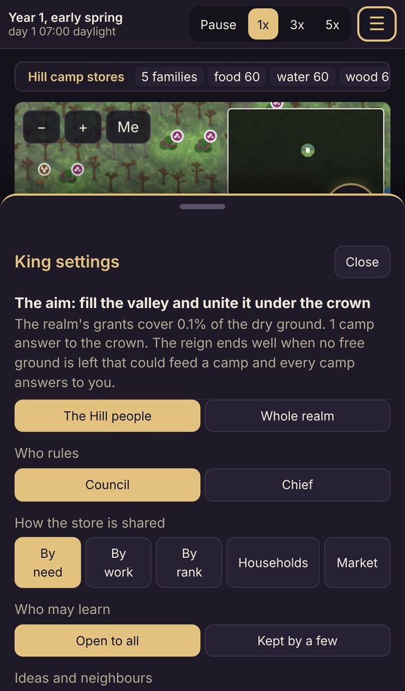
| Част | Какво прави |
|---|---|
| Горна лента | Датата и часът, Пауза/1x/3x/5x и ☰. Продължи е в лентата, когато има игра за продължаване. |
| Меню ☰ | „Прескочи сезона“, бройките на семействата, лагерите и народите, БГ/EN, ръководството, „Запази“, „Зареди“, „Карта“, „Знаци“ и „Сенки“. |
| Бутони на картата | −, +, Топо и Аз в горния ляв ъгъл на картата, а Народи на втори ред при отдалечаване, далеч от малката обзорна карта. |
| Ред със запасите | Запасите на избрания лагер. Плъзни го настрани, за да ги видиш всичките. |
| Иконки | Същите иконки като на компютър, по краищата на картата. Всяка отваря панела си като лист, който се плъзга нагоре върху долната част на екрана, така че горната част на картата остава видима. |
| Листове | Превърта се вътре в листа. Затвори го с ✕ или с бутона Затвори на панела, или докосни иконката му отново. Отворен е само един лист наведнъж. |
| „Засели се“ и „Проучване/Събиране“ | Долу на картата, винаги подръка. |
| Ред със съобщения | Под картата: последното, което се е случило. |
| Докосване | Докосни, за да вървиш или събираш, влачи, за да местиш картата, щипни, за да промениш мащаба. |
Знаци и сенки на картата

Всеки ресурс, който си видял и не е изчерпан, носи малък кръгъл знак с бял пръстен, за да се различава между дърветата. Изчерпаното място губи знака си, докато не порасне отново. Отбелязват се само ресурси на повърхността: рудата и охрата никога не се отбелязват, така че нищо скрито не се издава.
| Знак | Ресурс |
|---|---|
| Лилав, плодове | Горски плодове (храна) |
| Златен, точка | Обработвани парцели (храна) |
| Син, риба | Риба (храна) |
| Кафяв, рога | Дивеч (кожи и месо) |
| Син, капка | Извор (вода) |
| Сив, триъгълник | Камък |
| Кафяв, квадрат | Глина |
| Маслинен, стъбла | Тръстика и туфеста трева (влакна) |
| Сив, зрънца | Сол |
Сенките са сенките под дървета, камъни и хора, както и затъмняването по склоновете и под гората. При изключени сенки фигурите не хвърлят сянка, а тъмните петна по земята са смекчени, така че знаците и хората се виждат по-лесно. Знаци и Сенки се включват в ъгъла на картата на компютър и в менюто ☰ на телефон.
Изгледи на картата: текстура, Топо и старата карта
Земята може да се рисува по три начина. И трите са направени от истинската земя на картата, така че хълмовете, реките и горите са там, където са в действителност.
- Текстура (обичайният изглед): рисувана земя с дървета, камъни и хора. Хълмовете са осветени от северозапад, а височината им е преувеличена два пъти и половина, така че и ниските хълмове се открояват. Реките са в истинската си ширина и никога не са по-тънки от видима линия.
- Топо: натисни Топо до − и + в горния ляв ъгъл на картата. Земята става в светли цветове според земната покривка (трева, гора, бор, храсталак, влажна земя, скала), със сиви сенки на релефа и кафяви хоризонтали: тънка линия на всеки 10 м и удебелена на всеки 50 м, когато си отблизо. Натисни Топо отново, за да се върнеш. Играта помни избора ти. Картата се прерисува за няколко секунди, като започва от средата на изгледа.
- Старата карта: отдалечи силно и земята се превръща в карта, нарисувана с мастило върху пергамент. Знаци за планини и хълмове стоят там, където земята е висока и неравна, малки дървета бележат горите, туфи бележат блатата, голямата река е лента, а потоците са мастилени линии. Земята, която никой още не е видял, е празен пергамент и се запълва, докато проучваш. Приближи отново, за да се върнеш към текстурата или Топо.
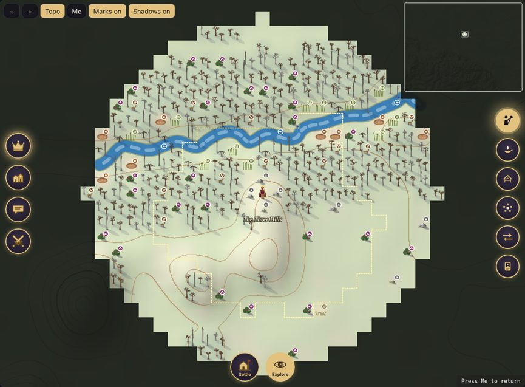
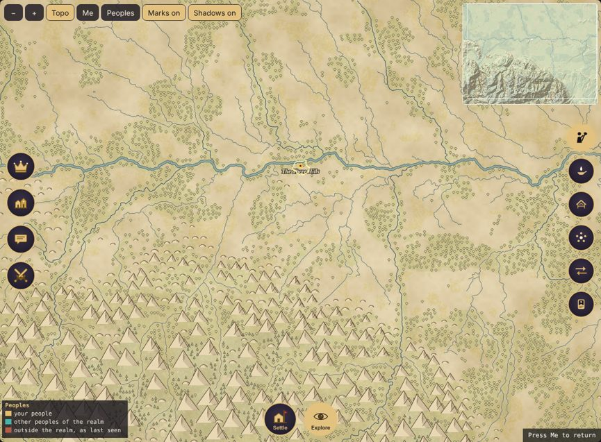
На старата карта селищата и пътищата се рисуват така, както би ги показала стара карта:
| На картата | Означава |
|---|---|
| Две шатри | Лагер, току-що заселен |
| Няколко къщи | Село: лагерът има свой съвет |
| Къщи със знаме | Град: народът му има право да се разширява и той е основал свое селище |
| Стени и кули около него | Селището има крепост |
| Малък ограден квадрат | Преден пост |
| Сиви прекъснати линии | Път, утъпкан от хората, които минават по него: по-тънка за пътека, по-дебела за оживен път |
| Плътна сива линия | Калдъръмен път |
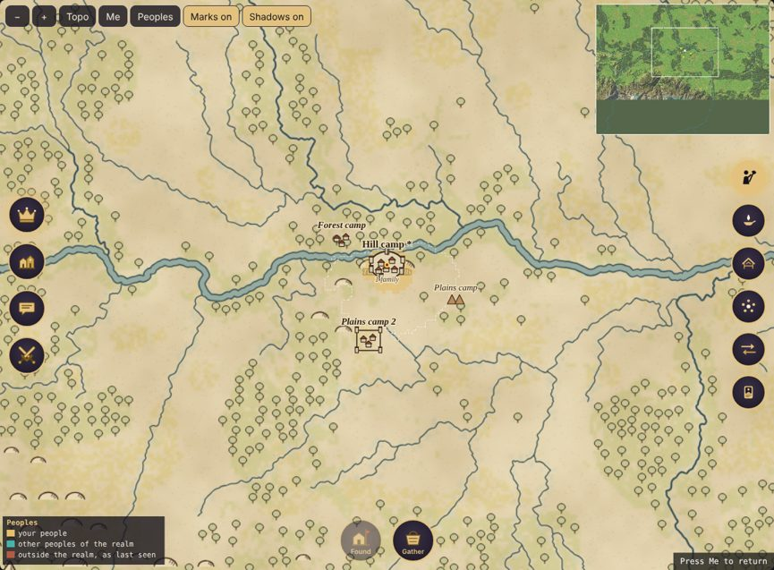
Пътищата не са начертани предварително. Появяват се там, където хората ти наистина вървят, и растат от бледа пътека до утъпкан път, колкото повече се използват.
Първият ти лагер
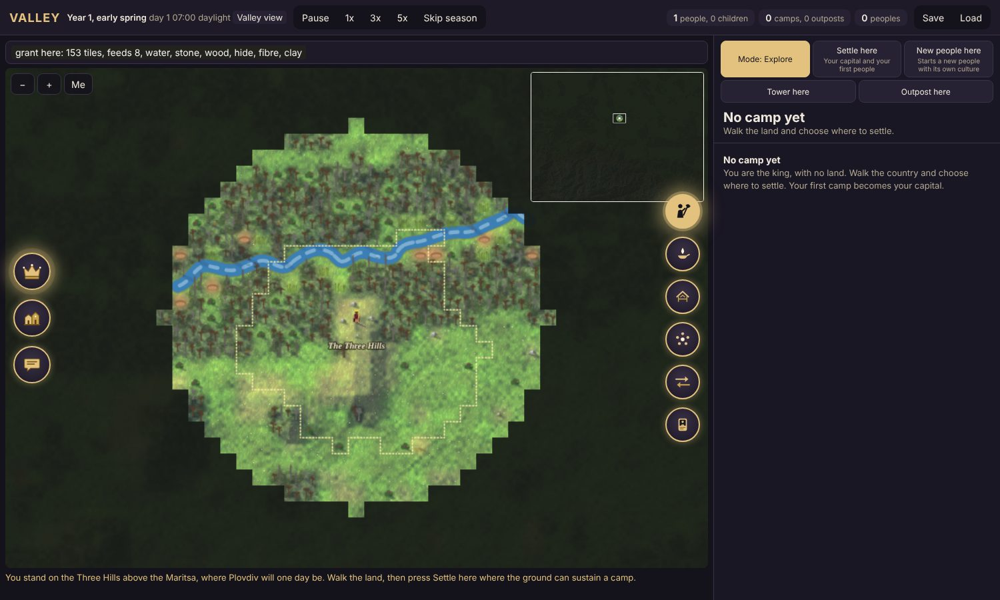
- Обходи земята. Започваш в режим Проучване (златното око долу на картата): докосването на картата те води там.
- Избери земята си. Лагерът се нуждае от земя, която ще изхранва 8 семейства, с вода и дърва. Тръстиката дава влакна за колибите. Камъкът, глината и калта наблизо решават какво ще могат да строят хората ти по-късно. Мястото, където се заселваш, е първият избор, който оформя културата им.
- Натисни „Засели се“ (иконката с колиба и знаме долу на картата). Това става твоята столица (твоето седалище), а хората му са първият ти народ. Иконката е сива там, където земята не може да изхрани лагер.
- Събирай. Иконката на режима се сменя на Събиране (кошница). Докосвай плодове, вода или дървета: царят отива, работи с царското сечиво и носи товара у дома. Кръглите знаци показват къде има ресурси.
- Запали огнище (5 дърва) в Строеж. Никой не остава без огън.
- Построй колиби от онова, което дава земята ти. Всеки вид подслонява 3 семейства, а една иконка на колиба е група от тях. Скитащите семейства остават само там, където има място.
Лагерът ти първо строи своя вид: онзи, от чийто материал земята му е най-богата и който картата на културата назовава. Ако запасите му не стигат за него, строи какъвто вид могат да платят. Всяка колиба се рисува като вида, от който е построена.Колиба От какво Шатра от кожи 6 дърва (колове) и 3 кожи Полувкопана каменна колиба 6 дърва и 6 камъка Измазана кръгла колиба 6 дърва и 4 глина Тръстикова къща (трева или тръстика) 8 дърва и 4 влакна Колиба от кора 12 дърва - Скитниците идват призори, ако има място и храна. Всяко зазоряване идва по един скитник в някой от лагерите ти, който има място, храна и вода, като първият ти лагер го привлича два пъти по-често. Следващ скитник под „Труд“ казва какво задържа следващия.
- При 6 семейства хората дават на лагера си име по селото, чиято земя държи (първият лагер на Трите хълма става Пловдив), а народът също приема това име. Това става независимо дали си създал съвет.
- Създай съвета, щом си готов да се отдръпнеш (следващият раздел).

Предаване на съвета

Когато съветът се създаде:
- Лагерът става село. Играта го отбелязва в съобщенията и на старата карта. Статусът му се показва най-горе в подробностите му в панела Карта.
- Лагерът получава истинското си име от българския регистър на селото, чиято земя държи (например Пловдив). Можеш да го преименуваш по-късно с молива до името му. Преименуването на столицата преименува и народа ѝ.
- Народът получава име и започва неговата карта на културата.
- Съветът разпределя работата, строи по най-добрия начин, който знае, и сам решава снабдяването си.
Ти запазваш: мислителите по идеите, сам да строиш, да си върнеш разпределянето на работата, правилата на лагера, правилата на царството, отмяната при снабдяването, правото да основава и помощта на короната.

Труд (човек със сечиво)
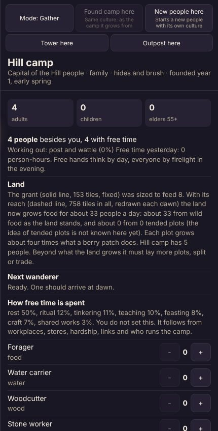
| Елемент | Какво прави |
|---|---|
| Семейства, млади, стари глави | Колко семейства живеят в лагера, колко млади още не са създали свои семейства и колко семейства се водят от мъж на 55 или повече години. Работещият мъж на всяко семейство работи, отзовава се на набора и се бие. |
| Следващ скитник | Какво задържа следващия новодошъл: няма място, твърде малко храна или още не е зазорило. |
| Редове за работа, − и + | Слагат или махат хора от работа (събирач, водоносец, дървар, тръстикар, каменар, ловец, рудар и т.н.). Работата се появява само когато ресурсът ѝ е видим в земята на лагера. Всеки без работа има свободно време. |
| Съветът разпределя работата | Включено: съветът премества хора там, където има недостиг. Изключено: ти сам ги разпределяш. |
| Мислител | Човек, поставен да мисли цял ден за идея, която вече се усъвършенства (задава се от „Идеи“). |
Идеи (маслена лампа)

Идеята се нуждае от причина (нужда, усетена сега, награда за майстора или любопитство, подхранено от излишък), от средства да се опита (подходящите материали под ръка) и от свободно време (хора без работа денем и всички вечер, ако има светлина).
| Раздел | Какво показва |
|---|---|
| Какво усъвършенстваме | До три идеи в ход, подредени с центъра най-отгоре, после според това докъде е стигнала всяка. Едната е центърът на вниманието на селото: вечерното мислене на всички отива за нея. Другите чакат следващи по ред. + и − добавят или махат мислител. Ако сложиш мислители на идея, тя става център; така насочваш лагера. |
| За какво си говорим | Идеи по силите им, които никой още не е започнал. |
| Какво знаем | Всичко открито и как. Идеите пътуват и по връзките за снабдяване до други лагери, ако споделянето позволява. |
Центърът се сменя само когато друга нужда е много по-силна (около два пъти) или дойде тежка нужда, така че идеята се довършва. Около една четвърт от вечерното свободно време на всички отива за идеи.
| Нуждата | Идея, която може да последва | Решението |
|---|---|---|
| Колибите губят топлина в студа | Плет и мазилка или сух зид | Здрави къщи за 4 семейства |
| Малко дървен материал, камъни навсякъде | Сух зид | Ниски стени от полски камък, които не горят |
| Тежки товари, носени надалеч | Ремъци за носене, после кобилици | Повече на курс |
| Река по пътя | Салове, по-късно лодки | Другият бряг |
| Храната се разваля | Съдове, после пещ | Печените съдове пазят храната |
| Понита в открита земя и много път | Езда | Пастири, съгледвачи и вестоносци яздят |
| Гамашите трият и се вдигат при ездата (или дълги студени пътувания) | Шити гащи от мека кожа или тъкан плат | Гащи за мъжете; жените запазват полите и роклите по ранния европейски обичай; картата ги рисува |
Строеж (покривна рамка)

Всеки ред показва цената си. Списъкът расте, докато се откриват идеи и се обработват нови материали: огнище, колиби, складове, къщи (най-добрата стена, която хората ти знаят: плет, сух зид и други), сушилки, пещи, парцели, кладенци, кули и крепости. Съветът строи сам; ти пак можеш да построиш всичко сам, включително по-старите видове.
Крепостите са важни във война: в крепостта се събират наборите и там стои постоянната войска. Кулите наблюдават земята около себе си за нападатели.
Настройки (съвет около огън)
| Настройка | Възможности и действие |
|---|---|
| Семеен съвет | Създай при 6 семейства: лагерът започва да се управлява сам. |
| Кой решава | Съвет или вожд. Вождът действа по-бързо и по-твърдо: трупа под напрежение, а при неспокойствие може да взема от съседите със заплаха. Лагер, воден от вожд, е по-малко верен на короната. |
| Как се дели складът | Как се делят храната и стоките в лагера (например на всички или според ранга и родството). Това определя кой какво праща по връзките за снабдяване. |
| Набор | Делът на възрастните, който лагерът дължи, когато короната свика набор (никакъв, 1 от 10, 1 от 5 и т.н.). Тези хора се и обучават у дома вечер. |
| Кой може да учи | Кой има право да работи по идеите. |
| Споделяне на знанието | Дали идеите минават към свързаните лагери. |
| Преименувай | Моливът до името на лагера. |
Най-горе в „Настройки“, за лагерите на царството, е От короната.
Снабдяване (две стрелки)
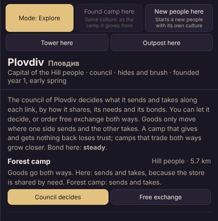
Показан е всеки друг лагер. Всяка връзка носи стоки в двете посоки, ако двата съвета позволяват. Всеки съвет решава дали да праща, да взема, и двете или нищо, според своите нужди: лагер без достатъчно храна спира да праща, вождът трупа, лагер, който дели по родство, дава на роднините.
| Бутон | Какво прави |
|---|---|
| Съветът решава | Оставя връзката на двата съвета. |
| Свободна размяна | Отмяна от царя: стоките се движат свободно в двете посоки по тази връзка. |
| Помири | Появява се при връзка с вражда между два лагера на царството. Виж От короната. |
Карта (портрет)

Народът на избрания лагер: земя, управление, пътуване, оръжие, занаят и вяра, с картина, нарисувана от онова, което използват. Докосни картата, за да прочетеш историята им с техни думи. Описание за ИИ пише описание, което можеш да поставиш в генератор на картини (то остава на английски, защото така го разбират най-добре). Виж картите показва всеки народ в тази игра.
От короната
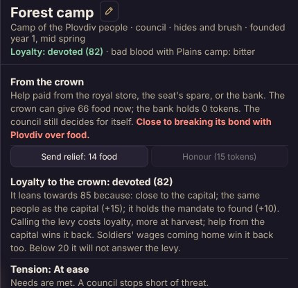
Най-горе в Настройки на лагер от царството и като бутони в списъка „Заплахи“ в раздела „Война“. Всяко средство се плаща с нещо истинско, а съветът пак решава сам.
Откъде идват средствата на короната, по ред: царският склад в седалището (данък, платен в натура), после собствените запаси на седалището до храна за един ден, после жетоните от хазната. Разделът показва колко храна може да даде короната в момента.
| Средство | Цена | Действие |
|---|---|---|
| Изпрати помощ | Стоките, които не стигат на лагера, от средствата на короната; или купени на двойна цена с жетони от най-близкия лагер с излишък (този лагер задържа жетоните) | Носачи ги занасят (закъснение според разстоянието). Молбата е изпълнена, вярност +5, враждата на лагера намалява с 10. Ако не може да се плати, се показва причината. |
| Почет | 15 жетона, платени в кесията на самия лагер | Вярност +10; само +3, ако е почетен отново до половин година. |
| Помири | 20 жетона или 20 храна | Враждата между два от твоите лагери −20 и малко вярност за всеки. (На реда в „Снабдяване“.) |
| Покани обратно | 20 жетона или 30 храна | За лагер, който се е отцепил. Дарът намалява враждата с 20; ако остатъкът е под 30 и доверието му не е разбито, се връща с вярност 40, като запазва своя народ и обичаи. Иначе казва защо. |
Заповеди на царя
Най-горе в десния панел. Царят е човек на картата: тези заповеди действат там, където стои.
| Заповед | Какво прави |
|---|---|
| Режим: събиране / проучване | Събиране: докосването на ресурси кара царя да работи. Проучване: докосването само го води. |
| Засели се тук | Основава първия ти лагер, столицата. |
| Основи лагер тук | Нов лагер от съществуващата култура: присъединява се към твоя народ и израства от най-близкия лагер. Трябва да е отвъд дадената земя на другите лагери. |
| Нов народ тук | Започва нов народ със собствена култура, който отглеждаш ръчно, докато има съвет. |
| Кула тук | Наблюдателна кула: вижда идващите нападатели. |
| Преден пост тук | Малка бригада до ресурс на земя, която не може да изхрани лагер; майчиният лагер ѝ носи храна и вода. |
| Започни отново тук | Само когато нямаш седалище: започва нов народ тук, който става твое седалище. |
Настройки на царя (корона)
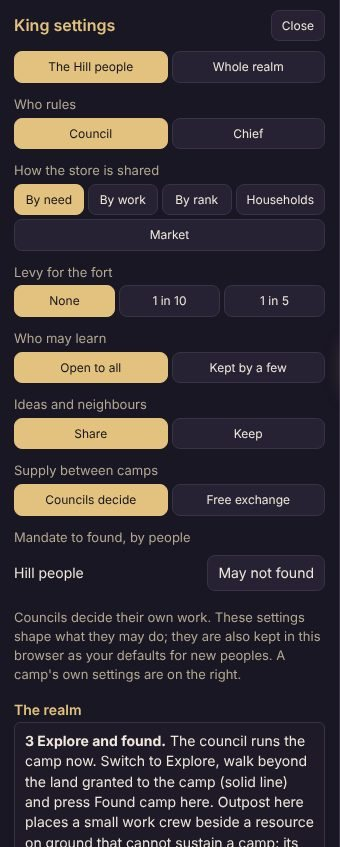
| Настройка | Какво прави |
|---|---|
| Обхват | Прилага правилата към избрания народ или към цялото царство. Изборите ти се пазят като начални за нови лагери. |
| Управление, стопанство, учене, споделяне | Същите правила като в „Настройки“ на лагера, но за много лагери наведнъж. |
| Снабдяване | Съветът решава или свободна размяна за целия обхват. |
| Данък | Никакъв, лек, справедлив или тежък (0, 5, 10 или 20% от печалбата за сезона). Виж Данък. |
| Право да основава | Дава или отнема правото на народ сам да основава нови лагери. Без него само ти основаваш лагери. |
| Етап и преглед на царството | Докъде е стигнало царството (например дали използва жетони), напрежението и управлението в лагерите. |
| Нямаш престол | Появява се само когато не е останал верен лагер: Започни отново тук или Оттегли се. |
Военните настройки са в раздела „Война“.
Селища (къщи)

Таблица на всички лагери: народът им, населението, дните храна, Вярност (верността към короната с една дума) и какво правят. Лагерите извън царството показват свое царство. Докосни ред, за да избереш лагера. Виж картите отваря въртележката с народите в тази игра.
Статус. Всяко селище е лагер, когато е току-що заселено, село, щом има съвет, и град, щом народът му има право да се разширява и то е основало свое селище. Град, чиито основани селища са всички изгубени, отново става село. Съобщенията казват кога селище се издига, а старата карта рисува всяко според статуса му (виж Изгледи на картата).
Съобщения и летопис
Съобщения (балонче с реч) е текущият дневник: пристигания, идеи, молби, предупреждения, битки. Важните събития влизат и в летописа, дългата памет на народа, при който „Прескочи сезона“ спира и от който черпи крайният екран. Редовете за битки имат бутон Доклад с пълния разказ.
Вярност
Всеки лагер на царството има вярност към короната от 0 до 100, показана в заглавието на лагера и в списъка „Селища“. Тя се приближава с 6% на ден към една цел:
| Фактор | Влияние върху целта (основа 60) |
|---|---|
| Разстояние от седалището | −2 на км след 5 км, до −30 |
| Същият народ като столицата | +15 (различен народ: −15) |
| Право да основава | +10 |
| Управляван от вожд | −10 |
| Пазен от крепост | +10 |
| Царят е идвал в последните 12 дни | +15 |
Събитията я променят пряко: набор −3 (−8 по жътва); помощ от столицата +3; помощ от короната +5; почет +10; справедлив данък върху далечен или беден лагер −2, тежък данък −6; данък при глад −2; заплати на войници, изплатени у дома, +2, неплатени войници, пратени у дома, −5.
Под 20 лагерът е непокорен: отказва набора. Под 40 може да напусне царството, когато скъса връзката си с майчиния лагер. Войници се наемат само от лагери с вярност 40 или повече.
Вражда
Враждата е между два лагера, от 0 нагоре, и отслабва с времето (по-бързо между роднини и търговски партньори). Тя се носи от целия народ: нов лагер на този народ наследява най-лошата.
| Причина | Вражда |
|---|---|
| Молба без отговор, докато другият е имал излишък | +8 |
| Даване без получаване | +3 |
| Кражба или вземане със заплаха | +25 |
| Скъсана връзка | +25 |
| Различни народи на по-малко от 10 км | +0,3 на ден |
| Набег срещу нас от техен лагер | +25 при успех, +12 ако е отблъснат |
| Превземане на лагер | +40 с лагера, към който са избягали хората му |
| Глад за земя | +10 на сезон (+20, ако е и гладен) |
| Тежък данък | +5 към столицата |
При 80 или повече между два лагера от едно царство може да започне гражданска война.
Напрежение и отцепване
Когато лагер моли партньор за храна, вода, дърва или камък и молбата не бъде изпълнена, напрежението расте ден след ден. Отцепването сега става на две стъпки и короната може да се намеси преди всяка от тях.
Отцепил се лагер запазва името на новия си народ, дори да се върне, но играта помни откъде идва този народ (неговия корен). По-високото напрежение в лагери, водени от вожд, може да доведе до вземане от съседите със заплаха.
Данък, царският склад и хазната
- Данъкът има една цел: да плаща храната на войниците. Всичко друго, което дава короната, идва от запасите на седалището и от хазната, както преди.
- Размери: никакъв, лек, справедлив, тежък: 0, 5, 10 или 20% от онова, което лагерът е спечелил през сезона, събрани при смяната на сезона и платени в жетони в хазната.
- Гладните лагери са освободени, но губят 2 вярност, защото са били помолени.
- Преди жетоните няма данък. Интендантът взема храна от лагерите на кредит от короната и делът на всеки лагер се записва (панелът „Хазната“ във „Война“ показва на кого се дължи).
- Жетоните идват, щом размяната в столицата стигне достатъчно далеч (отчет и писмо) и короната дължи достатъчно, за да ѝ трябват. Короната първо връща дълговете си, после плаща всеки нов товар от хазната, когато може.
- Лагер, на който дълго се дължат 60 храна или повече, губи малко вярност всеки сезон, докато не му се плати.
Войната накратко
Мирът е нормалното състояние. Никой не воюва с теб, освен ако някой не дойде за теб или ти не тръгнеш на поход; една култура става войнствена само заради онова, което прави. Останалата част е подробностите; това е общата картина.
Кой може да дойде за теб
| Кой | Кога | Още |
|---|---|---|
| Дружини нападатели | Само ако включиш нападателите („Война“, „Стража“). Изключени са в началото на всяка игра. | Дружини нападатели |
| Заселени чужденци | Дружина, превзела един от лагерите ти, живее там като свой народ. Вождът ѝ те напада, а щом огладнее за земя и има достатъчно хора, тръгва на поход. | Заселени чужденци, Глад за земя |
| Собствените ти съвети | Когато враждата между два лагера от един народ стигне 80. Царят не я започва и не я спира. | Гражданска война |
Отбрана
- Виж ги, че идват. Строй кули на края на земята си („Кула тук“). Кулата вижда около 6 км и предава тревогата със сигнален огън на кули и лагери до 15 км, така че защитниците не са изненадани.
- Определи набор. Във „Война“ задай набора за царството (никакъв, 1 от 10, 1 от 5) или собствения набор на лагер в неговите „Настройки“. Тези хора се обучават вечер и стигат основно обучение за около година. Жителите, които не са свикани, пак се бият у дома с най-добрите си сечива.
- Построй крепост, щом хората ти знаят Палисади (Палисадите следват Трънливите плетове и нощните кошари и идват, когато зверовете още влизат, има набор, друго царство е наблизо или нападатели заплашват; раздел „Строеж“, 20 дърва и 12 камъка). Лагерите до 12 км или свързаните с нея по връзки за снабдяване я пазят поред, защитени са от нея (+10 към целта за вярност) и се отзовават на призива ѝ за оръжие.
- Наеми набора към крепост („Война“, „Набори“, „Наеми“). Интендант храни войниците от лагерите около нея, на кредит, докато няма жетони.
Нападение
Събери войска в крепост (наборът може да се събере и при навеса на съвета), после Поход срещу лагер от раздела „Война“. Можеш да тръгнеш срещу отцепили се лагери, лагери грабители, лагери на други народи, които си видял, и собствени лагери, държани от чужденци.
| Побеждаваш срещу | Какво става |
|---|---|
| Твой лагер, държан от чужденци | Връща се в царството под съвет, с вярност 30. |
| Чужд лагер | Завоевание: минава под короната, като пази народа и обичаите си, с вярност 15 и с негодувание. Благоразположението на този народ пада с 40. |
Сключване на мир
Повечето чужденци могат да бъдат спечелени без бой. Търгувай с тях и им пращай дарове, за да расте благоразположението им; дружина, която търгува с царството в двете посоки, не го напада. При високо благоразположение и малка вражда чуждият народ сам се присъединява към короната, всичките му лагери с вярност 50. Виж Търговия, благоразположение и присъединяване.
Пази мира у дома
Гражданските войни израстват от враждата между собствените ти лагери. Смекчи я, преди да стигне 80: Помири по връзка за снабдяване, Изпрати помощ на лагер в недостиг, Почети колеблив лагер. Виж От короната.
Разделът „Война“ (кръстосани мечове)
Всичко военно на едно място, четвъртата иконка вляво.


| Раздел | Какво има там |
|---|---|
| Заплахи | Нападатели или чужденци, видени в поход; лагери, близо до скъсване на връзка (с Изпрати помощ); отцепили се лагери (с Покани обратно); лагери, надраснали земята си; непокорни лагери. |
| Войни на съветите | Всяка гражданска война в ход. |
| Сили | Хазната и постоянната войска: наемане, освобождаване, заплати. После крепости и войски: гарнизони, събиране, роли на отрядите, поход, разпускане. |
| Набори | Размерът на набора за царството и таблица по лагери: набор, обучени у дома, стари войници и какво би пратил (или защо не). Докосни ред, за да отвориш лагера. |
| Стража | Кули и сигнални огньове, съобщени нападатели, нападатели вкл./изкл. и пробен набег. |
| Чужденци | Всеки чужд народ, който си видял: търговия, вражда, благоразположение, глад за земя и Изпрати дар. После таблицата Срещнати чужденци: дружини, знамена, откъде идват, колко често са идвали, какво са взели, колко често са били разбити и водачът им, ако е известен. |
| Битки | Последните шест боя, всеки с Доклад. |
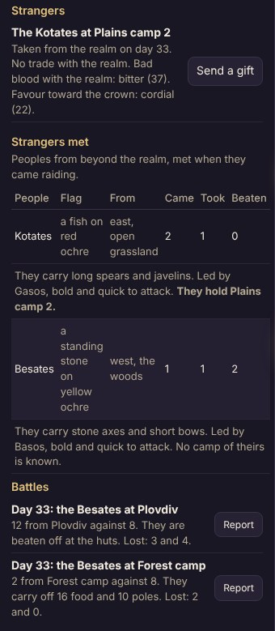
Набори, войници и крепости
Набори
- Делът на набора на всеки лагер („Настройки“ или размерът за царството във „Война“) е кого дължи, когато бъде свикан.
- Обучение в селото: хората от набора се упражняват вечер и стигат основно обучение за около година. Спира, докато лагерът гладува, и бавно избледнява, когато упражненията спрат.
- Старите войници: постоянни войници, които са се прибрали, пазят обучението си (никога под едно базово ниво) и се свикват първи.
- Самото събиране също малко обучава. Ранените не се свикват.
Сборното поле
- Сборното поле (8 дърва, от раздела „Строеж“ на лагера, изисква съвет, без нужда от идея) е мястото, където се събира войска без крепост. Утъпкано поле със знаме и сламени мишени се вижда на картата и в 3D.
- Събери войската от „Война“ (Крепости и войски) или от настройките на лагера: наборът на всеки лагер до 12 км или свързан по връзки за снабдяване идва като една войска.
- Оттам войската може да тръгне на поход срещу лагер на друго царство, който хората ти са видели, срещу отцепил се лагер или срещу грабител. При победа чуждият лагер е превзет.
- Наборите на лагерите в обхвата му се обучават наполовина по-бързо.
- Снабдяване: набор, свикан на сборно поле или в крепост, получава интендант, както наетата войска. Той държи храна за 4 дни за всеки мъж, докарана от носачи от лагерите наблизо, като взема само онова, което всеки може да отдели, на кредит от короната, докато няма жетони. На поход войската живее от онова, което носи; три дни без храна и тя се разпада.
- То не пази нищо и няма гарнизон, а опълчението се прибира след десет дни бездействие. За защита, гарнизон и наети войници още ти трябва крепост.
Наетата войска и интендантът
- Наеми набора на лагер към крепостта, която го покрива („Война“, таблицата „Набори“: Наеми). Лагерът трябва да има съвет и крепост наблизо или свързана с него по връзки за снабдяване. Мъжете отиват в крепостта и остават; лагерът преброява нов набор от останалите хора.
- Първите наети мъже водят интендант, чиято шатра и склад стоят до крепостта. Всяка зора той храни войниците от склада на войската и праща носачи до най-близките лагери за храна за 4 дни, като взема само онова, което всеки лагер може да отдели (той пази храна за 5 дни за своите хора). Носачите вървят по пътеките; товарите им се виждат на картата и в 3D.
- Войници, гладували три дни, започват да се прибират, по една четвърт наведнъж.
- Плащане: преди жетоните всеки товар е дълг на короната към този лагер. Щом царството има жетони, короната плаща дълговете си и после плаща товарите от хазната. Данъкът съществува, за да пълни хазната за това.
- У дома връща наетите мъже на лагера. Ако крепостта падне, всички се прибират.
Крепости и кули
- Крепостта изисква идеята Палисади, после 20 дърва и 12 камъка от раздела „Строеж“ на лагера. Съветите не строят крепости сами; царят ги поставя.
- Палисадите израстват от Трънливи плетове и нощни кошари: лагерът първо трябва да знае плетовете. Плетовете идват, когато вълци, глигани или рисове безпокоят лагера и нивите му, или по същите причини като стените. Лагер с плет се обръща към Палисади, когато мечки, глигани и вълци все още влизат, когато нападатели го заплашват, когато има зададен набор или когато е видял наблизо лагер на друго царство (до около 15 км). Всяка стъпка отнема време: на тестовия запис за Пловдив една трета от лагерите имаха плетове след две години, а първият лагер работеше по Палисади.
- Крепостта дава на близките лагери защита (+10 към целта за вярност), гарнизон, място за събиране и място, където служат наетите войници. Кулите виждат идващите нападатели, така че защитниците не са изненадани.
Как се решава боят
Няма точки за отряди. Всеки боец е истински човек с оръжие, броня, умение и смелост. Боят на поле от 150 м върви така: стрелците и прашкарите стрелят, докато страните се приближават, защитниците посрещат нападателите в последните 60 м, сулиците се хвърлят от 20 м, после ударите в ръкопашния бой падат едновременно от двете страни. Редиците обхождат краищата; стените (×1,5) и оградите или високата земя (×1,2) помагат на защитниците. Когато паднат твърде много, едната страна се разбягва и бягащите се преследват.
| Оръжие | Особености |
|---|---|
| Копие | Обхват 2, щета 3,2, държи редицата по-добре |
| Боен чук | Щета 5, бавен (0,7), пробива броня (1,5) |
| Бойна брадва | Щета 4,5, отчасти пробива броня |
| Кука-острие | Бързо (1,2) |
| Харпун | Хвърля се от 25 м за 4 щета |
| Лък | Обхват 120 м, 3 на изстрел, 12 стрели |
| Прашка | Обхват 90 м, 2,5 на изстрел, 20 камъка |
| Сечива на жителите | Секири, чукове, кирки, ловни копия или лъкове, сърпове, остени, домашни брадви и тесли, иначе ножове: на 85% от направено оръжие |
- Металът подобрява оръжията: мед ×1,1, бронз ×1,25, желязо ×1,3.
- Броня: кожа 1, бойни дрехи 2, люспи 3,5 точки; всяка непробита точка намалява щетата с 8%. Щитът спира 15% (20% с умбон).
- Умението расте с преживените битки и обучението; възрастта го износва. Точността расте с лова, битките и обучението. Смелостта идва от боя у дома, от вожд, от битките и обучението, и страда при глад.
- Ранените почиват у дома и се бият с 6 от 10 сила, ако трябва.
- Докладите не са задължителни: един ред в „Съобщения“ с бутон Доклад за целия разказ.
Гражданска война
Царят не започва и не прекратява войните между съветите. Когато враждата между два лагера от едно царство стигне 80 и едната страна е готова да се бие, започва война на съветите.
- Другите лагери избират страна според връзките си. Ако столицата се присъедини, другата страна губи 20 вярност.
- Военните набори вървят към водещия лагер на всяка страна; страните тръгват на поход поред и само с поне 0,6 от силата на защитниците. Победителят взема 30% от храната на лагера и бива белязан като войнствен. Между страните не тече снабдяване; лагерите във война отказват набора на короната.
- Край: преднина от две победи, двете страни изтощени (или 36 дни), или старейшините на лагер, свързан и с двете, посредничат за мир.
- Победените се отцепват: нов народ със същата история и обичаи, но със собствено знаме и облекло. Ако са твърде малко за съвет (под 6), се пръсват като скитници. Ако са достатъчно, се заселват далеч от всички като отделно царство, което по-късно може да се присъедини отново.
Дружини нападатели
Включи нападателите в частта „Стража“ на раздела „Война“. Нападателите са народи отвъд края на картата, а не безлики числа.
- Самоличност: всяка дружина има име, знаме (знак върху цвят) и оръжия от земята отвъд своя край: горите дават каменни брадви и къси лъкове; блатата и реките дават харпуни; хълмовете и откритата земя дават копия, прашки или сулици.
- Връщат се: около два от три набега са на позната дружина, която се връща. Дружината расте с победите, намалява със загубите и ранените, които носи, и се разпада, ако бъде достатъчно разбита. Набег с 35% или повече ранени се обръща към дома.
- Военен водач и нрав: дързък (бърз да нападне), предпазлив (само където е сигурен), алчен (привличат го пълните складове), отмъстителен (връща се при лагерите, които са го победили).
- Памет: дружината се бои от лагерите, които са я победили, освен ако водачът ѝ не е отмъстителен.
- Какво научаваш: при първа среща само знамето, броя, оръжията и края, от който са дошли. Името и нравът на водача се научават от падналите и ранените след бой.
Заселени чужденци
- Превземане на лагер: след спечелен набег дружината може да остане, ако все още има 6 или повече мъже, а останалите жители са по-малко от около половината от тях. Дързък или алчен водач по-често остава.
- Лагерът става нов народ с името и знамето на дружината, управляван от вожд, войнствен и извън царството. Връзките му с твоите лагери се късат. Половината оцелели жители бягат в най-близкия ти лагер; останалите остават.
- Набези от дома: заселената дружина напада със собствените си хора, до 40% от тях; мъртвите не се връщат.
- Ако седалището ти падне: бягаш в най-близкия лагер, който още е верен (40+) и не е във война, и той става твоето седалище; всеки лагер губи 10 вярност. Ако не е останал такъв, „Настройки на царя“ предлага Започни отново тук или Оттегли се.
- Връщане: поведи войска срещу него („Поход срещу X (държан от Y)“). Ако победиш, той се връща под съвет с вярност 30.
- Завоевание: срещу всеки чужд лагер, който си видял, може да се тръгне на поход. Победата го поставя под короната, като пази народа и обичаите си, с вярност 15 и с негодувание.
Търговия, благоразположение и присъединяване
Благоразположението е как всеки чужд народ гледа на короната, от враждебно до топло (−100 до 100), показано в раздела „Война“. Променя се само чрез събития:
| Събитие | Благоразположение |
|---|---|
| Договорена търговия | +10 |
| Всеки ден търговия в двете посоки | +0,5 (+1, докато гладуват) |
| Дар („Изпрати дар“) | +15 (+5 за алчен водач, който иска отново) |
| Отказана търговия | −5 |
| Неуспешен техен набег или поход | −5 |
| Завоюваш един от лагерите им | −40 |
- Молба за търговия: чужд лагер в недостиг, който не е нападал от 12 дни и чийто водач не е отмъстителен, моли най-близкия ти лагер (до 20 км). Съветът приема, ако враждата е под 25, не гладува и верността му е 20+. Иначе отказва и казва защо.
- Мир: дружина, която търгува с царството в двете посоки, не го напада.
- Дарове: 30 храна или 20 жетона; намалява враждата с 20 за всички техни лагери.
- Присъединяване към короната: при малка вражда (под 15), водач, който не е отмъстителен, и или благоразположение 60+ при търговия, или 40+ при глад за земя. Всичките им лагери се присъединяват с вярност 50, като пазят народа, обичаите и знамето си.
Глад за земя
Пълната или смесена карта не е край: това е застой, който завършва с война или съюз.
- При всеки сезон лагер със съвет и 12 или повече семейства, който не може да намери свободна земя за нов лагер, изпада в глад за земя. Чужденците изпадат в глад за земя едва година след като са превзели или основали лагера.
- Враждата му с най-близкия лагер от друго царство (до 30 км) расте всеки сезон.
- Пренаселен твой съвет със силна вражда към чужденци сам свиква набор от 1 на 10. Походът остава твой избор.
- Чужденците тръгват на поход, когато се управляват от вожд, гладуват за земя, имат ниско благоразположение (под 20), вражда 60+ към някой твой лагер и виждат, че имат числеността: поне 0,8 от защитниците, които виждат, плюс всички твои войски до 30 км. Най-много веднъж на сезон. Победата им дава лагера.
Сезони и бедствия
- Студ: горските плодове и нивите почти спират да растат, колибите губят топлина и огньовете горят повече дърва. Съобщенията предупреждават няколко дни по-рано. Трупай дърва и храна и строй здрави къщи.
- Пожар, наводнение, земетресение: случват се, повреждат складове и постройки и променят начина, по който хората решават да строят (изгорял лагер може да мине към камък; разтърсен от земетресение може да се върне към дърво).
- Гладът спира обучението в селото, освобождава лагерите от данък, увеличава вероятността за отцепване и кара чужденците да молят за търговия.
Победа и поражение
Няма точки. Царуването завършва добре, когато долината е пълна и всеки лагер в нея отговаря пред короната. Краят е състояние, до което стига долината; всеки се достига веднъж, вписва се в летописа и отваря крайния екран, където избираш Продължи играта или Сложи край на царуването.
Накъде може да тръгне царуването
| Долината | Резултат |
|---|---|
| Пълна, и всеки лагер е от твоя народ (първото селище, дъщерните му лагери и клоновете, които са се отцепили и върнали) | Край: Един народ изпълва долината. Най-добрият. |
| Пълна, и всеки лагер отговаря пред короната, макар и не всички от един народ | Край: Много народи, една корона. Също пълен успех. |
| Пълна, но някои лагери стоят извън царството (чужденци или отцепили се лагери) | Не е край. Застой: гладът за земя расте, докато завърши с война или съюз (Глад за земя). |
| Всеки лагер на царството е изгубен, превзет, отцепен или изоставен | Край: Нито един лагер не отговаря пред короната. Царуването се е провалило. „Настройки на царя“ предлага Започни отново тук или Оттегли се. |
| Оттегляш се или слагаш край на царуването от крайния екран | Край: Царят оставя короната. |
„Пълна“ означава, че никъде не е останала свободна земя, която да изхрани нов лагер. Краищата при пълна карта се проверяват при всяка смяна на сезона; загубата на царството се проверява всеки ден.
Как се побеждава
- Изпълни земята. Основавай лагери сам (иконката „Засели се/Основи“) и давай на съветите мандат да основават свои. Панелът на царя показва каква част от сухата земя покриват наделите на царството.
- Пази лагерите си. Следи верността и враждата. Пращай помощ на лагерите в недостиг, почитай колебливите, помирявай караниците и Покани обратно всеки, който се отцепи.
- Приобщи външните. Всеки лагер извън короната спира и двата добри края. Спечели чужденците с търговия, дарове и благоразположение, докато се присъединят; или тръгни на поход срещу тях.
- Не губи седалището. Ако столицата падне, царят бяга в най-близкия верен лагер (вярност 40+, не във война), той става седалище и всеки лагер губи 10 вярност.
Как се губи царуване
- Отцепвания, които никога не се поправят: лагерите се откъсват заради вражда и неизпълнени молби (Напрежение и отцепване).
- Граждански войни между съветите ти, чиито победени се превръщат в нови народи (Гражданска война).
- Набези и завоевание: дружини, които превземат лагери, заселват се в тях и оттам нападат и тръгват на поход (Заселени чужденци).
- Глад и студ, които изпразват лагери (Сезони и бедствия).
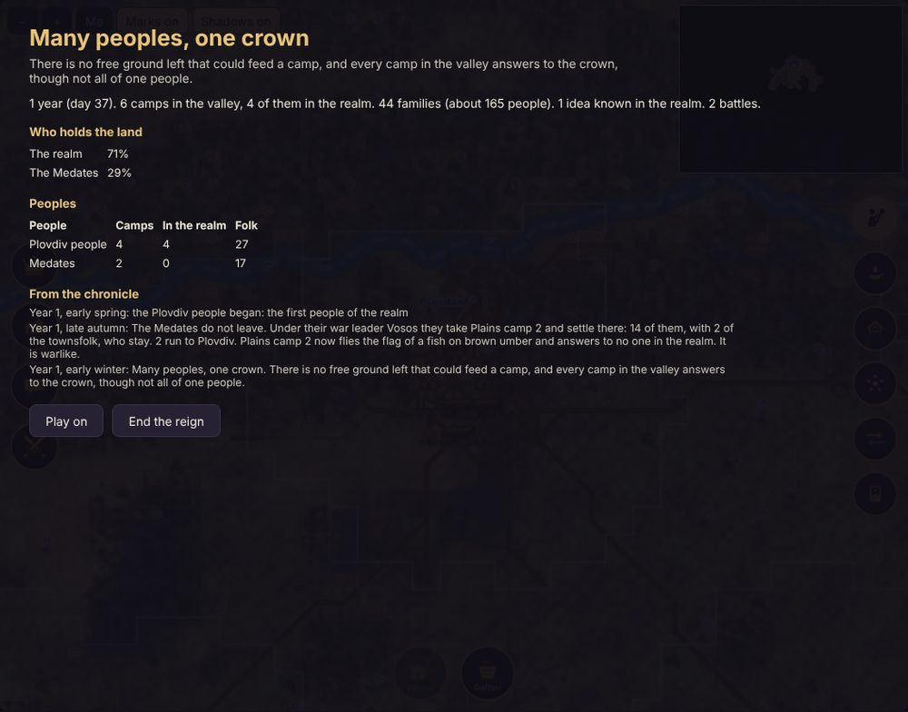

- Крайният екран показва години, лагери, хора, известни идеи и битки; кой държи земята; лагерите и населението на всеки народ; достигнатите краища; и последните важни записи от летописа. Нищо в него не е резултат в точки.
- Продължи играта го затваря: още можеш да достигнеш друг край. Сложи край на царуването оттегля царя и запазва запис на царуването в този браузър, после предлага Гледай долината или Започни нова игра.
- Царят не остарява и не умира: той е символ. Важни са селищата на царството.
Карти

Valley се играе на истинска земя. Пловдив (60 × 45 км при 100 м на поле) е вграден, а още карти излизат като файлове с карти.
- Карта (горната лента, или ☰ на телефон) изброява Пловдив, картите, публикувани на сайта, и картите, вече отваряни на това устройство.
- Отвори файл с карта… зарежда изтеглен файл
.valleymap; след това той се пази на това устройство. - Споделена връзка може да отвори карта направо.
- Смяната на картата презарежда страницата. Играта ти първо се запазва автоматично, а Продължи те връща към нея на нейната карта.
- Всеки запис помни картата си. Зареждането на запис от друга карта първо превключва към нея.
Запазване и зареждане
- Играта се запазва сама в браузъра на всеки няколко минути и при всяка смяна на сезона. Продължи в горната лента я подхваща.
- Запази изтегля играта като файл; Зареди отваря такъв, на всяко устройство.
- Записите от по-стари версии продължават да се зареждат: новите възможности се добавят като незадължителни данни.
- Всеки запис помни на коя карта е игран (виж Карти).
Брой посещения: живият сайт брои посещенията и няколко момента от играта (отваряне на играта, основаване на първи лагер, създаване на съвет, достигане на край, смяна на езика) с GoatCounter. Не използва бисквитки и не записва нищо лично: само общи бройки, с държава, браузър и размер на екрана.
Речник
| Термин | Значение |
|---|---|
| Откъснат | Лагер, който се е отцепил от царството. |
| Вражда | Недоволство между два лагера. |
| Дружина | Нападатели отвъд края на картата, с име, знаме и военен водач. |
| Столица / седалище | Лагерът, от който управлява царят. |
| Съвет / вожд | Кой решава в един лагер. |
| Обучение | Подготовка, която всеки човек носи; прави по-добри бойци. |
| Благоразположение | Добрата воля на чужд народ към короната. |
| Семейство | Единицата за население: работещ мъж с жена, деца и старци, показани като една фигура. |
| Надел / обхват | Постоянната земя на лагера (плътна линия) и докъде работи (пунктир). |
| Гладен за земя | Пренаселен лагер без свободна земя за нов лагер. |
| Набор | Делът възрастни, който лагерът дължи, когато короната призове. |
| Вярност | Верността на лагера към короната, от 0 до 100. |
| Мандат | Правото на народ сам да основава нови лагери. |
| Стар войник | Бивш постоянен войник у дома, свикван пръв при набор. |
| Застава | Работна група на земя, която не може да изхрани лагер. |
| Корен | Народът, от който произлиза отцепил се народ. |
| Царски склад | Данък в натура в седалището, преди жетоните. |
| Отломка | Победената страна в гражданска война, превърнала се в свой народ. |
| Чужденец | Всеки народ извън царството ти. |
| Жетони / хазната | Пари, щом царството ги използва, и запасът им у короната. |
| Войнствен | Лагер, който е вземал със сила; другите го помнят. |